ULIGHED
I
DØDELIGHED
ULIGHED I DØDELIGHED
KVINDER HAR OP TIL 17% HØJERE RISIKO FOR DØDSFALD I BILULYKKER END MÆND
EN OVERSET RISIKOGRUPPE?
ULIGHED
I
DØDELIGHED
KVINDER HAR OP TIL 17% HØJERE RISIKO FOR DØDSFALD I BILULYKKER END MÆND
BIOLOGI
&
FYSIOLOGI

KVINDERS ANATOMI GØR DEM MERE SÅRBARE VED KOLLISIONER
BILSIKKERHED
&
CRASHTESTS

95% AF CRASHTESTDUKKER REPRÆSENTERER EN GENNEMSNITLIG MAND
LØSNINGER
&
FREMTID

MERE DATA - MERE LIGHED
KØNSINKLUDER
-ENDE CRASHTESTS
TRAFIKMEDICINSK OPMÆRKSOMHED
KVINDER & MÆND KAN VÆRE INVOLVERET I SAMME BILULYKKE - MEN CHANCEN FOR AT OVERLEVE ER IKKE LIGE STOR?